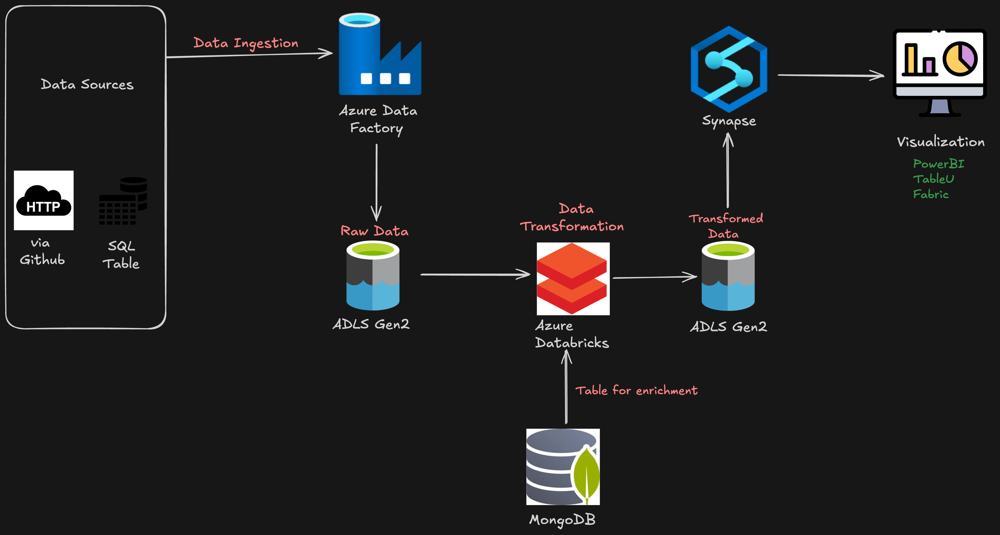

Ingest
ADF ForEach activities copy Olist CSV files from HTTP endpoints and relational sources into ADLS Bronze.
Azure · Big Data Engineering · E-commerce
An end-to-end Olist data platform that orchestrates ingestion with Azure Data Factory, transforms and enriches data with Databricks and MongoDB, and serves analytics-ready datasets through ADLS Gen2 and Azure Synapse.
Project overview
The project models a production-style batch pipeline around the Brazilian Olist dataset. It combines parameterized ingestion, lakehouse processing, NoSQL enrichment, and serverless SQL serving in a Bronze, Silver, and Gold architecture.
Solution architecture
Data Factory coordinates ingestion into ADLS Gen2. Databricks performs distributed processing and enriches product categories from MongoDB. Synapse exposes curated lake data to visualization tools such as Power BI, Tableau, and Microsoft Fabric.

Data pipeline
Each stage has a clear responsibility, from parameter-driven file movement to Spark transformations and SQL serving. This separation makes the solution easier to operate, troubleshoot, and extend.
ADF ForEach activities copy Olist CSV files from HTTP endpoints and relational sources into ADLS Bronze.
File names, paths, headers, and source contents are checked before distributed processing begins.
Databricks cleans records, converts dates, derives delivery metrics, and joins the core commerce entities.
MongoDB supplies Portuguese-to-English product-category mappings for analytics-friendly output.
The consolidated Spark DataFrame is written to the ADLS Silver layer in Delta/Parquet form.
Synapse serverless SQL creates views and a CETAS external table over curated lake data.
Gold-layer data is prepared for dashboards and semantic models in Power BI, Tableau, or Fabric.
Transformation logic
Spark turns independent operational datasets into a consolidated analytical model while retaining unmatched orders through left joins and preserving the lineage of core business keys.
Remove duplicate records and rows whose fields are entirely null before downstream processing.
Convert purchase, approval, carrier, delivery, and estimated-delivery timestamps into usable date values.
Calculate actual and estimated delivery durations and identify orders delivered later than expected.
Connect orders to customers, payments, items, products, and sellers using stable operational keys.
Bring product-category translations from MongoDB into Spark for clear English-language reporting.
Publish delivered-order views and a compressed Parquet external table for efficient analytical access.
Medallion architecture
Separating raw, transformed, and serving-ready assets protects source fidelity while allowing each consumer to work with the level of quality and structure they need.
Source CSV files arrive in ADLS Gen2 with their original structures and names for traceability and replay.
Databricks writes joined, enriched, deduplicated, and typed records for reusable analytical workloads.
Synapse views and external tables expose curated datasets optimized for reporting and decision-making.
Technology
Review the Databricks notebooks, parameterized ADF inputs, MongoDB loaders, Synapse SQL scripts, architecture documentation, and local Olist datasets.
Contact
Have a cloud data project in mind? Send me a message and let's discuss how to turn fragmented sources into scalable, analytics-ready solutions.